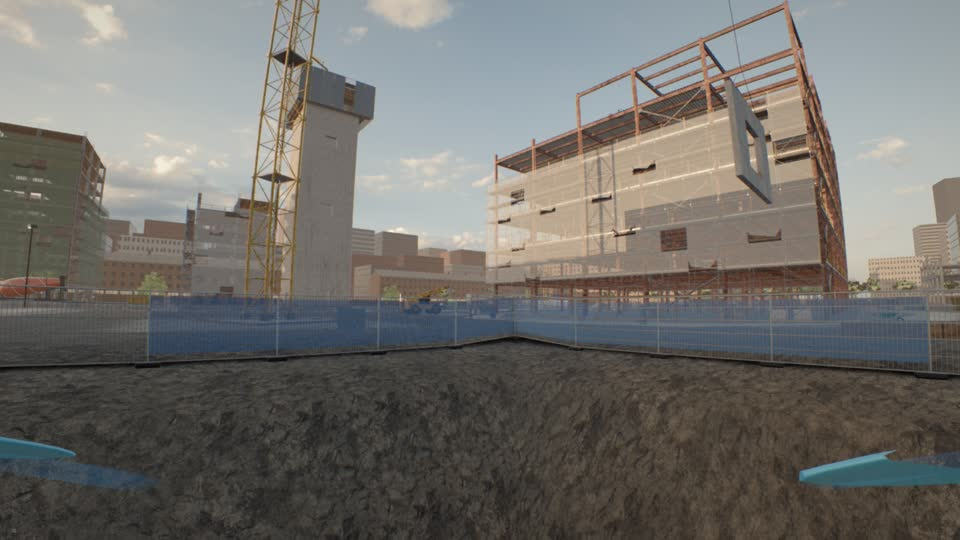
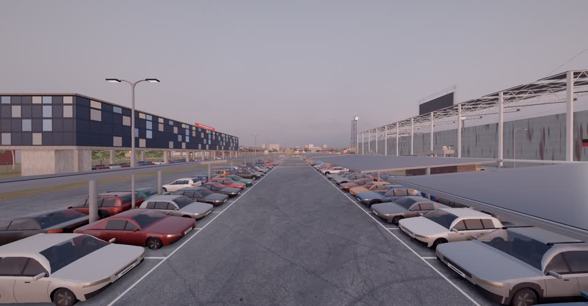
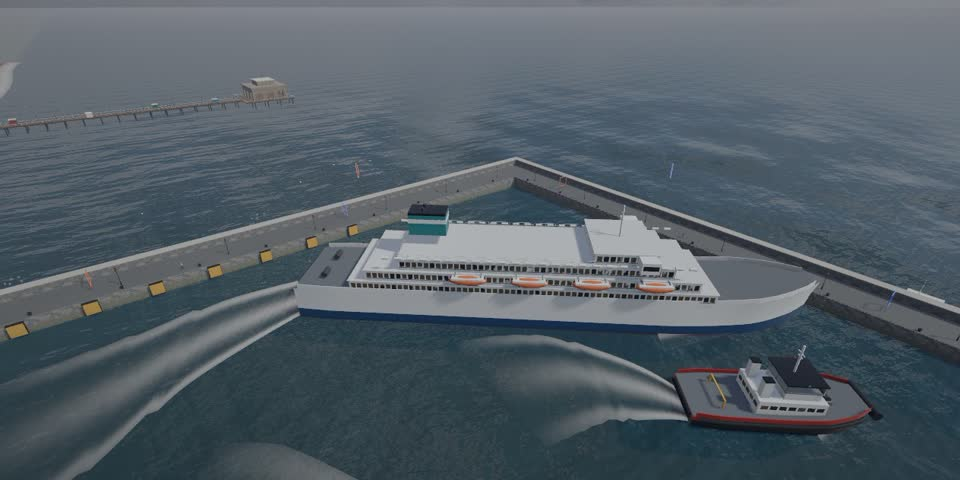

QUADLINE FPV
Realistic FPV drone simulator
Get the game
One download for Windows PCs. After that it keeps itself up to date: every time you start it, it fetches the newest version by itself.
Download for Windows


How to install
- Tap Download. If your browser says the file isn't commonly downloaded, choose Keep.
- Open QuadlineFPV-Setup.exe. If Windows shows "Windows protected your PC", click More info, then Run anyway. That's because it's a small game that isn't on a store yet.
- That's it. It installs in a few seconds, opens the game and puts Quadline FPV on your desktop. No admin password needed.
Playing together
For online multiplayer, open Steam and log in first, then go to Multiplayer in the game: one player hosts and reads out the join code, the others join with it. On the same Wi-Fi you can use Multiplayer → LAN (allow the firewall if Windows asks).